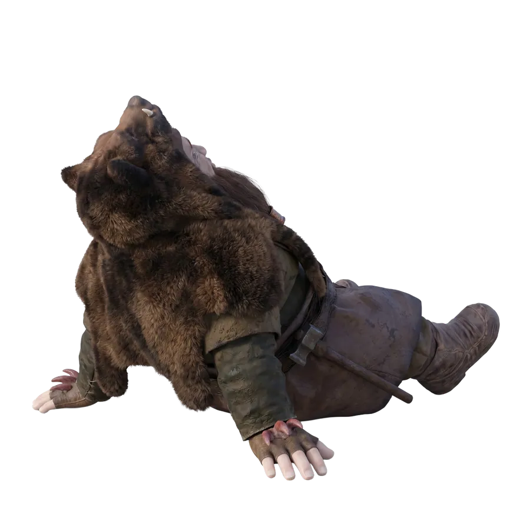
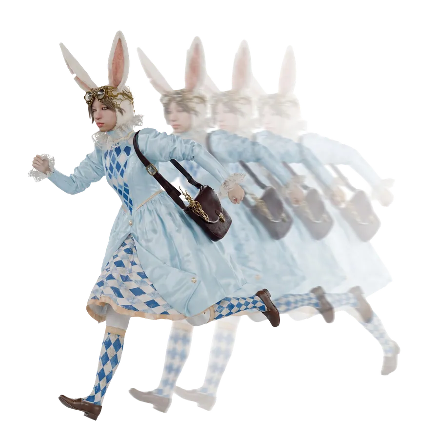
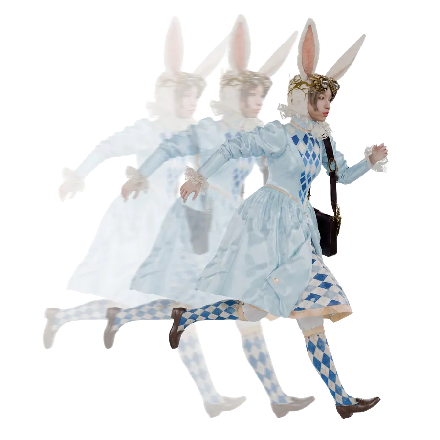
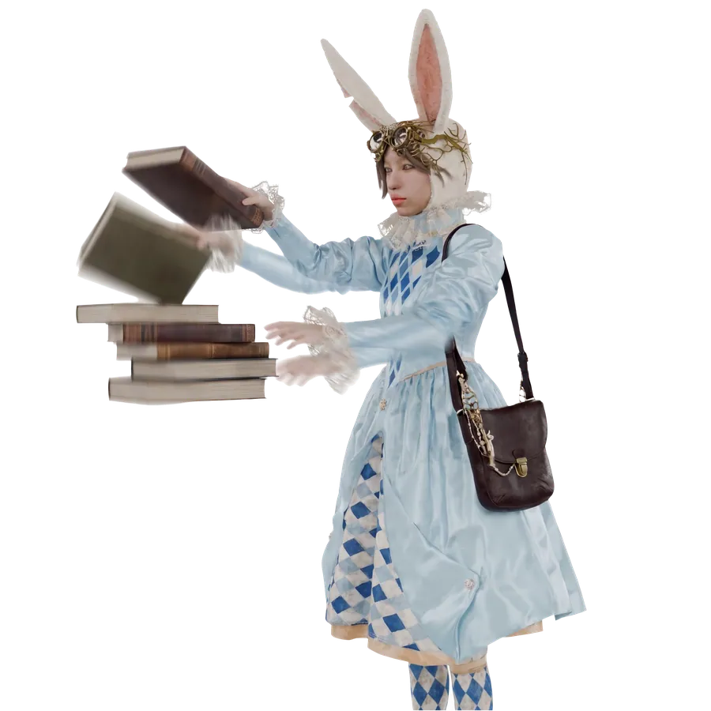
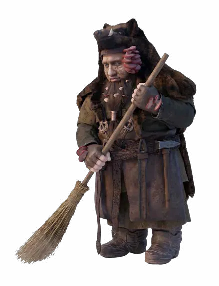
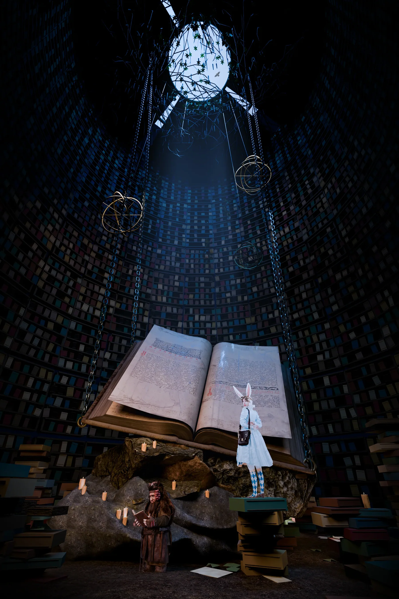

Khoảng Trời Dưới Sâu
Thời gian lặng lẽ trôi qua. Brann vẫn tiếp tục cuộc hành trình của mình. Chiếc Carnyx bằng đồng khẽ đung đưa bên hông theo từng bước chân. Nơi lớp áo dày trước ngực, chiếc hộp nhạc Astrid tặng vẫn được cậu cất cẩn thận như một báu vật. Thỉnh thoảng, Brann lại lấy nó ra, lau đi một lớp bụi mỏng, rồi mở nắp. Tiếng nhạc nhỏ bé ngân lên giữa con đường vắng. Êm dịu. Bình yên. Khóe môi Brann bất giác cong lên. Cậu nhớ đến Alaric và Astrid. Rồi lại nhớ đến hai hiệp sĩ sinh đôi. Nghĩ đến cuộc chia tay ban nãy. Cậu không nhịn được mà bật cười một mình.
Wonderland…
Quả thật là một nơi kỳ lạ.
Càng đi về phương Nam. Phong cảnh lại càng đổi khác. Những cánh rừng thông dần lùi lại phía sau. Thay vào đó là những hàng bách cao vút, những đồi nho trải dài dưới nắng và những quảng trường lát đá trắng phản chiếu ánh mặt trời. Xa xa. Những mái ngói đỏ nằm san sát trên sườn đồi. Những mái vòm cẩm thạch. Những bức tượng cổ. Những tháp chuông vươn lên giữa nền trời xanh biếc. Mọi thứ đều toát lên vẻ thanh lịch, ngăn nắp và đầy tính học thuật. Brann vừa đi. Vừa khe khẽ ngân nga theo giai điệu của chiếc hộp nhạc. Cậu khẽ xoay chiếc hộp trong tay. Lắng nghe từng nốt nhạc vang lên.
"Bụp."
…
Mặt đất biến mất.
"Ơ…"
"AAAAAAAAAAAAA!"
Mặt đất dưới chân sụp xuống. Brann còn chưa kịp phản ứng thì cả người đã rơi thẳng vào khoảng tối bên dưới.
"Khoan!"
"Khoan đã!"
Cậu cố bám lấy thành hố. Đất đá liên tục trượt khỏi những đầu ngón tay. Những búi rễ cây quệt ngang vai áo. Sỏi đá lăn theo người cậu xuống phía dưới. Ánh sáng trên miệng hố nhanh chóng thu nhỏ lại thành một vòng tròn bé xíu.
"Không không không không không…"
Một mái vòm bằng đá bất ngờ hiện ra phía dưới. Ngay sau đó… Là vô số giá sách cao đến tận trần. Brann mở to mắt.
"…Chết rồi."
RẦM!
Cậu rơi trúng một chồng sách dày. Theo quán tính. Cả người lăn thêm vài vòng. Khuỷu tay vô tình húc vào chân một chiếc thang trượt. Chiếc thang lao khỏi đường ray.
Lạch cạch!
Nó va vào một hệ thống bánh răng bằng đồng. Các bánh răng đồng loạt chuyển động. Một cánh tay đòn xoay mạnh. Đập trúng bệ đỡ của một thiên cầu bằng đồng.
Rầm.
Quả thiên cầu lăn đi. Va vào ba giá sách đứng sát nhau. Giá thứ nhất nghiêng. Đẩy sang giá thứ hai. Rồi giá thứ ba. Chỉ trong chớp mắt. Hàng trăm cuốn sách đồng loạt đổ xuống như thác. Một cuộn hải đồ bung khỏi giá bay thẳng qua đầu Brann, quấn lấy cánh tay cậu. Brann giật mình kéo mạnh. Lại kéo theo cả giá đựng địa bàn hàng hải. Một kính lúp bằng đồng rơi xuống. Ba bình khoáng vật va vào nhau. Hai mô hình thiên cầu quay tít. Một chiếc đồng hồ quả lắc lệch khỏi vị trí. Những sợi dây ròng rọc đan chéo vào nhau. Trong chớp mắt, cả căn phòng vốn ngăn nắp tuyệt đối đã biến thành một mớ hỗn độn. Brann ngồi im chết lặng giữa đống sách ngổn ngang. Bụi giấy phủ đầy tóc, râu và vai áo. Chiếc mũ đầu lợn lệch hẳn sang một bên.
"…"
"…Ta…"
"…hình như vừa gây ra một chút rắc rối."
Bộp.
Một quyển sách trên mép giá rơi xuống.
Ngay sau đó.
Rào…
Lại thêm một chồng sách nữa đổ xuống. Brann nhắm mắt.
"…"
"…Được rồi."
"…Lần này thì là rắc rối lớn."
Không có ai trả lời. Chỉ có sự im lặng. Một sự im lặng kỳ lạ. Đến mức Brann bắt đầu nghĩ rằng nơi này vốn chẳng có ai sinh sống.
Cho đến khi…
Một quyển sách trên giá cao nhất khẽ rung lên. Rồi một quyển nữa. Ở góc xa của thư viện. Giữa những giá sách cao chạm tới mái vòm. Một đôi tai thỏ màu trắng chỉ vừa kịp nhô lên. Chúng giật khẽ. Rồi lập tức biến mất. Brann chớp mắt.
"…Có ai ở đó không?"
Không có tiếng trả lời. Chỉ có tiếng một cuốn sách rất dày khẽ khép lại.
Phập.
Brann bước thử thêm một bước.
"Ta xin lỗi."
"Ta không cố ý."
Vừa dứt lời. Một giọng nữ vang lên từ đâu đó phía sau những giá sách. Dứt khoát. Rõ ràng. Không hề cao giọng. Nhưng ai cũng có thể nhận ra… Chủ nhân của nó đang ở rất gần giới hạn của sự bình tĩnh.
"Chín mươi tám chuyên khảo về Giả kim học."
"Một trăm ba mươi hai bản chép tay Thiên văn cổ."
"Hai trăm lẻ bảy luận văn Cơ học."
"Một trăm sáu mươi ba chuyên luận Triết học Tự nhiên."
"Bốn trăm mười lăm biên niên sử các Vương triều phương Bắc."
"Một trăm tám mươi sáu hải đồ."
"Sáu mươi hai tinh đồ."
"Mười hai mô hình thiên cầu."
"Một kính viễn vọng."
"Hai kính hiển vi."
"Ba mươi bảy mẫu khoáng vật."
"Hai hệ thống truyền động."

Brann nuốt khan.
"…"
"…Nhiều vậy sao?"
Bộp.
Một quyển sách từ tầng trên cùng rơi xuống.
Giọng nói dừng lại đúng nửa nhịp.
"…"
"…Bốn trăm mười sáu."
Brann nhìn theo tiếng nói. Chỉ kịp thấy một bóng trắng lướt vụt qua giữa những giá sách. Nhanh đến mức tưởng như chỉ là ảo giác. Cậu quay sang. Không còn ai. Chỉ có một quyển sách vừa được đặt trở lại ngay ngắn trên tầng cao nhất.
"Xin lỗi."
Brann vội vàng chống người ngồi dậy.
"Thật lòng xin lỗi."
"Ta làm rơi vài quyển…"
"Một nghìn một trăm mười sáu."
Giọng nói vang lên ở phía sau. Brann giật mình quay lại. Không có ai. Ở đầu bên kia thư viện. Một chồng sách vừa được dựng thẳng.
"…À."
Brann gãi đầu.
"Một nghìn một trăm mười sáu."
"…Không phải vài."
Giọng nói lần này vọng xuống từ tầng trên. Brann ngẩng đầu. Chỉ thấy một chiếc thang gỗ còn khẽ rung.
"Ta…"
"…xin lỗi."
Cậu lập tức nhặt lấy quyển sách gần nhất.
"Để ta xếp lại."
Vừa định đặt lên giá.
Vút.
Quyển sách biến mất khỏi tay. Brann giật bắn mình.
"Hả?"
Cậu quay phắt sang. Không biết từ lúc nào.
Một cô gái tai thỏ đang đứng trên chiếc thang gỗ cách đó vài mét. Cặp kính tròn bằng đồng nằm ngay ngắn trên sống mũi. Chiếc tai trái có một vết rách cũ đã được khâu lại rất cẩn thận. Đôi găng tay trắng phủi nhẹ lớp bụi trên bìa sách. Cô đưa quyển sách trở về đúng vị trí. Không lệch dù chỉ nửa đốt ngón tay. Rồi mới liếc nhìn Brann.
"Ngươi."
"…đến đây để phá thư viện của ta sao?"
Brann vội vàng xua tay.
“Ta… Ta chỉ định giú—p…”
"Ngươi."
"…đã đặt Biên niên sử cạnh Thiên văn."
Brann chớp mắt.
"…"
"…Ta…"
Lại cầm thêm một quyển khác.
"Vậy chắc…"
"…quyển này ở đây?"
Cậu vừa đặt xuống. Giọng cô gái lập tức vang lên.
"Sai."
Brann khựng lại.
"Nó thuộc Khu Biên khảo về Cơ học Thiên thể."
"…Không phải Lịch sử Hàng hải."
Brann lại cầm quyển khác.
"Vậy…"
"…quyển này?"
"Sai."
"Triết học Tự nhiên."
"…Không phải Thực vật học."
Brann cười gượng.
"…Ta không biết."
“…”
“…”
Cô gái khẽ nhắm mắt, hít một hơi rất sâu. Đầu ngón tay siết nhẹ sống sách.
"Ngươi…"
"…"
"…đã đặt Lịch sử cạnh Thiên văn."
Brann chớp mắt.
"…"
"…Ta xin lỗi?"
"Ngươi còn đặt Giả kim học cạnh Thi ca."
"…"
"…"
Brann suy nghĩ rất lâu.
"…Ý cô là…"
"…ta đang xếp sai?"
Eira mở mắt. Lần đầu tiên từ khi gặp Brann. Cô nhìn thẳng vào cậu.
"…Đúng."
Brann ngượng ngùng gãi đầu.
"…Vậy để ta sửa."
Cậu vừa nhấc tay.
Vút.
Quyển sách lại biến mất. Lần này, Brann nhìn thấy rõ. Cô gái chỉ mất một cái chớp mắt để bước qua ba bậc thang, nhấc quyển sách khỏi tay cậu rồi xuất hiện ở giá đối diện. Tốc độ nhanh đến mức chiếc áo choàng trắng phía sau còn chậm hơn cả bước chân. Cô đặt quyển sách vào đúng vị trí. Sau đó xoay nhẹ quả thiên cầu. Chỉnh lại chiếc kính lúp. Đẩy đồng hồ quả lắc trở về đúng trục. Mỗi động tác đều dứt khoát. Chính xác. Không thừa dù chỉ một cử động. Đúng lúc ấy.
Keng…
Tiếng chuông đồng hồ vang lên. Cô lập tức dừng lại. Không chậm lấy một nhịp. Đi đến chiếc đồng hồ quả lắc vừa bị Brann làm lệch. Đưa con lắc trở lại đúng vị trí. Chỉnh kim đồng hồ. Vuốt phẳng mép tờ lịch ghi chú treo bên cạnh. Xong xuôi, cô phủi nhẹ bụi trên tay. Rồi mới quay lại nhìn Brann.



"Lời xin lỗi…"
"…không thể khôi phục một cấu trúc tri thức đã mất."
Brann đứng ngây ra.
"…"
"…"
"…Ý cô là…"
"…ta nên xếp lại sách?"
Khóe mắt cô khẽ động.
"…Đúng.”
Một khoảng im lặng ngắn trôi qua.
Rồi cô nói thêm.
“Nhưng tạm thời…"
"Đừng chạm vào bất cứ thứ gì nữa."
Brann lập tức rụt tay về. Cậu đứng im, ngoan ngoãn như một đứa trẻ vừa bị giáo viên bắt gặp làm sai bài.
Lần đầu tiên…
Cậu cảm thấy mình vừa bước vào không phải một thư viện.
Mà là…
Thế giới của một người mà tri thức được sắp xếp cẩn thận hơn cả cuộc đời mình.
Brann vẫn đứng yên tại chỗ. Yên đến mức hai tay cũng không biết nên đặt vào đâu.
Trong khi đó…
Vút.
Eira đã xuất hiện ở đầu bên kia thư viện. Một chồng sách nghiêng được dựng thẳng.
Vút.
Một cuộn hải đồ vừa bung khỏi giá được cuộn lại ngay ngắn.
Vút.
Chiếc thiên cầu trở về đúng góc cũ.
Brann chỉ biết quay đầu liên tục. Ánh mắt cậu chạy từ trái sang phải. Rồi từ phải sang trái. Nhanh đến mức cổ bắt đầu mỏi.
"…"
"…Cô…"
"…lúc nào cũng đi nhanh vậy sao?"
"Không."
Giọng Eira vang lên từ tầng trên.
"Ta đang đi bình thường."
Brann nhìn chiếc thang còn khẽ rung.
"…"
"…Thế chắc chân ta chậm quá."
Không có tiếng đáp. Chỉ có tiếng sách được đặt trở lại giá. Mỗi quyển sách đều trở về đúng vị trí như thể chúng chưa từng bị xê dịch. Brann đứng nhìn hồi lâu. Rồi cúi xuống. Lần này, cậu không động vào sách nữa. Chỉ lặng lẽ nhặt từng mảnh kính vỡ dưới sàn. Mảnh lớn. Mảnh nhỏ. Cậu gom thành từng đống gọn gàng.
Một lúc sau. Một đôi giày da dừng lại trước mặt cậu. Brann ngẩng lên. Eira nhìn đống kính.
"…"
"…Đúng."
Brann ngẩn người.
"…Hả?"
"Ngươi."
"…đã phân loại theo kích thước."
Brann mỉm cười.
"Ta nghĩ như vậy sẽ dễ dọn hơn."
"…Đúng."
Chỉ một chữ. Nhưng lần này. Giọng cô dịu hơn một chút.
Brann ấp úng.
"…À."
"…Ta tên Brann."
"…"
"…"
"…"
"Còn cô?"
Eira vẫn đang cúi xuống nhặt những mảnh kính nhỏ nhất.
"Đó… không phải một câu hỏi."
Brann ngẩn người.
"…Hả?"
"Nó thiếu chủ ngữ."
"…"
"…"
Brann gãi đầu.
“…À.”
"…Xin lỗi."
"…"
"…Tên cô là gì?"
Lần này.
Eira mới đáp.
"…Eira."
Brann gật đầu.
"Rất vui được gặp cô."
"…"
"…Không."
Brann chớp mắt.
"…Không?"
Eira nhìn cậu.
"…"
"…Xét theo tình trạng hiện tại của thư viện."
"…"
"…Ta không thể nói điều tương tự."
Brann đứng chết trân. Một cảm giác vừa tội lỗi, vừa khó xử khiến cậu chỉ biết cúi đầu. Eira nhặt nốt mảnh kính cuối cùng.
"…"
"…Có lẽ."
"…sau này sẽ khác."
Rồi cô đứng dậy.
"Đi theo ta."
Brann chớp mắt.
"Đi đâu?"
"Ăn."
"…"
"…À."
Brann vội vàng đi theo. Bữa tối diễn ra trong im lặng. Hai ổ bánh mì đen. Hai bát súp nóng. Một ấm trà thảo mộc. Eira đọc sách. Brann ăn rất nhanh. Không ai nói thêm câu nào. Đến khi Brann đặt chiếc thìa xuống. Eira mới khép sách lại.
"Ngày mai. Ngươi bắt đầu sửa."
Brann ngẩng đầu.
"Sửa?"
Eira bình thản nhìn về phía thư viện.
"Đường ray."

"Hệ thống truyền động."
"Thiên cầu."
"Đồng hồ."
"Kính lúp."
"Kính viễn vọng."
"Và…"
"…một nghìn một trăm mười sáu quyển sách."
Brann cười gượng.
"…Nhiều thật."
"Đúng."
"Vậy nên…"
"…đừng làm chậm tiến độ."
Sáng hôm sau, Brann thức dậy từ rất sớm. Khi cậu bước ra khỏi căn phòng nhỏ dành cho khách, đã ngồi ở chiếc bàn dài giữa thư viện từ bao giờ. Ngồi trước một chiếc bàn dài.Ánh nắng xuyên qua ô cửa kính màu, rơi xuống những trang giấy kín đặc nét chữ. Không ngẩng đầu. Không chào hỏi. Cô chỉ nói.
"Ngươi dậy muộn."
Brann nhìn ra cửa sổ.
"Mặt trời mới lên mà."
"Ba mươi bảy phút."
"…"
"…Hả?"
"Ngươi muộn ba mươi bảy phút."
Brann gãi đầu.
"…Ta đâu có hẹn."
Eira khép cuốn sổ.
"Ta có."
"…"
"…"
Brann chẳng hiểu gì.
"…Vậy."
"…Ta bắt đầu từ đâu?"
Eira đưa cho cậu một cây chổi.
"Sàn."
Brann mỉm cười. Cuối cùng. Cũng có việc mình làm được. Cậu bắt đầu quét thư viện. Mười phút sau. Eira đi ngang.
"…"
"…"
"…Sai."
Brann dừng tay.
"…Có chuyện gì sao?"
"Ngươi…quét ngược chiều."
"…Quét cũng có chiều nữa à?"
"Có."
"Nếu quét từ đông sang tây."
"Bụi sẽ bay về phía cửa sổ."
"Nắng sẽ chiếu qua."
"Dễ nhìn."
"Nếu quét từ tây sang đông."
"Bụi sẽ bay vào khu bản thảo."
Brann im lặng.
"…"
"…Ý cô là…"
"…ta nên quay lại?"
"…Đúng."
Eira không nói thêm gì. Cũng không giúp. Chỉ tiếp tục ghi chép.
Buổi chiều, Brann ngồi trước chiếc đường ray bằng đồng của chiếc thang. Đó là thứ đầu tiên cậu làm hỏng khi rơi xuống thư viện. Cậu tháo từng bánh xe. Mài nhẵn phần méo. Đóng lại chốt.
Cốc.
Cốc.
Cốc.
Eira bước tới. Cô đẩy thử chiếc thang. Nó lướt được nửa đoạn. Khựng lại.
"…"
"…Sai."
Brann chống tay lên đầu gối.
"…Ở đâu?"
"Bánh sau."
"…lệch."
"…một ly."
Brann cúi xuống quan sát. Rồi bật cười.
"Đúng thật."
"Ta chưa thấy."
Lần này, Eira không sửa. Cô chỉ lùi sang một bên, để mặc Brann tự làm tiếp. Đến lần thử thứ hai. Chiếc thang trượt nhẹ trên đường ray, không còn phát ra một tiếng động nào.
"…"
"…Đúng."
Chỉ vậy. Rồi cô quay đi.
Ngày hôm sau, Brann chuyển sang hệ thống bánh răng truyền động. Đó là cỗ máy đã bị cậu vô tình kích hoạt hôm đầu tiên. Những bánh răng bằng đồng lần lượt được tháo rời. Từng bánh răng đồng được tháo rời. Lau sạch. Đánh bóng. Thay chốt. Điều chỉnh từng khớp nối.
Eira đứng phía sau. Lặng lẽ quan sát. Một lúc sau. Cô hỏi.
"Ngươi."
"…biết sửa?"
Brann mỉm cười.
"Ta là thợ rèn mà."
"Ta không giỏi đọc sách."
"Nhưng mấy thứ này…"
"Cũng giống như một thanh kiếm."
"Nếu lệch một chút."
"Cả hệ thống sẽ lệch theo."
Lần đầu tiên, Eira không đáp. Cô chỉ nhìn rất lâu vào đôi bàn tay đầy vết chai của Brann.
Đến ngày thứ ba, Brann mới được phép chạm vào những giá sách. Lần này, cậu đọc rất kỹ từng gáy sách trước khi đặt xuống. Eira đi ngang. Dừng lại. Cô rút một quyển ở giữa. Đổi chỗ với quyển bên cạnh.
"Xong."
Brann nhìn.
"…"
"…Ta sai ở đâu?"
"Niên đại."
"…"
"…À."
Eira đưa quyển sách lên.
"…Và."
"…đây là tập ba."
"…Không phải tập hai."
Brann nhìn kỹ. Hai quyển sách gần như giống hệt nhau. Chỉ khác một con số nhỏ trên gáy.
"…"
"…Ta hiểu rồi."
"Lần sau."
"Ta sẽ đọc kỹ hơn."
Eira không trả lời. Nhưng khi đi được vài bước. Cô khẽ liếc về phía sau. Brann vẫn đang cúi đầu. Cẩn thận đọc từng dòng chữ nhỏ trước khi đặt sách lên giá. Khóe môi cô gần như muốn nhếch lên. Rồi lại nhanh chóng trở về vẻ bình thản thường ngày. Như thể… Nụ cười ấy chưa từng tồn tại.

Những ngày sau đó, Brann lần lượt sửa lại chiếc đồng hồ quả lắc. Đánh bóng thiên cầu. Cân chỉnh chiếc kính lúp bằng đồng. Mỗi khi hoàn thành một thứ. Eira đều kiểm tra rất kỹ. Rồi chỉ nói đúng một chữ.
"…Đúng."
Không khen. Cũng không chê. Nhưng… Cô đã không còn chỉnh sửa cậu ở mọi việc như trước nữa.
Một buổi chiều, hai người cùng sắp xếp lại kho bản đồ. Brann cẩn thận cuộn từng tấm da, đặt lên giá. Rất lâu sau, Eira bước tới. Cô nhìn một lúc, rồi rút đúng một cuộn, đổi sang vị trí bên cạnh.
"…"
"…Lại sai?"
Brann hỏi.
"Thuận tay."
"…"
"…Ý gì?"
"Ta thuận tay phải."
"Ta luôn lấy từ trái sang."
"Nếu đổi."
"Sẽ chậm."
Brann nhìn hai cuộn bản đồ.
Chúng chỉ cách nhau…
Một gang tay.
"…"
"…Có khác nhiều vậy sao?"
Eira nhìn cậu.
"Cộng lại."
"Mỗi ngày."
"Mười ba lần."
"Một năm."
"Bốn nghìn bảy trăm bốn mươi lăm lần."
Brann im lặng rất lâu. Rồi bật cười.
"…Ta bắt đầu hiểu rồi."
Eira ngẩng lên.
"…Hiểu gì?"
"…Cô không phải người thích bắt bẻ."
"Cô chỉ…"
"…không muốn lãng phí thời gian."
Lần đầu tiên. Eira không sửa câu nói ấy. Cô chỉ lặng lẽ cất cuộn bản đồ cuối cùng lên giá.
Những ngày sau đó, Brann không còn phải hỏi mỗi khi cầm một quyển sách. Không còn quét ngược chiều. Không còn đặt nhầm niên đại. Cậu bắt đầu nhớ. Chiếc thang phải dừng ở đâu. Bánh răng nào cần tra dầu trước. Thiên cầu phải cân bằng theo hướng nào. Và… Mỗi đồ vật trong thư viện đều ở đúng vị trí của nó vì một lý do. Không phải vì Eira quá khó tính. Mà bởi với cô, tri thức cũng giống như những bánh răng của một cỗ máy. Chỉ cần một mắt xích lệch đi. Cả hệ thống sẽ chậm lại.
Sáng ngày thứ năm, tiếng chuông đồng hồ vừa vang lên.
Keng…
Ở cuối hành lang, một bóng trắng lao vụt qua giữa những giá sách. Brann mỉm cười.
"…Đúng giờ."
Không hiểu từ khi nào, tiếng chuông, tiếng bước chân và bóng áo choàng trắng ấy…đã trở thành một phần của buổi sáng nơi thư viện.
Đến gần trưa, Brann ngồi trước chiếc kính viễn vọng bằng đồng. Đó là thứ cuối cùng vẫn chưa được sửa. Cậu tháo từng bánh răng nhỏ, nhẹ nhàng đặt lên bàn. Tập trung đến mức không hề nhận ra. Ở phía sau, Eira đã khép cuốn sách lại, lặng lẽ nhìn cậu thật lâu.
Đêm xuống. Cả thư viện chìm trong ánh sáng vàng nhạt của những ngọn đèn dầu. Ngoài cửa sổ. Mưa lất phất rơi trên những tán bách. Brann vẫn ngồi bên chiếc kính viễn vọng. Đầu ngón tay cẩn thận đánh bóng từng bánh răng bằng đồng. Không ai nói gì. Chỉ có tiếng giấy lật rất khẽ. Và tiếng đá mài chạm vào kim loại. Rất lâu sau, Eira khép cuốn sách.
"…Ngươi."
Brann ngẩng đầu.
"…Sao?"
"…Sau khi rời khỏi đây."
"…Ngươi định đi đâu?"
Brann im lặng. Cậu cúi xuống. Khẽ xoay chiếc bánh răng trong tay.
"…Ta không biết."
Một nụ cười nhàn nhạt hiện lên.
"Thật ra…"
"Ta chưa từng biết."
"Từ khi bước qua cánh cửa ấy."
"Ta chỉ…"
"…đi."
Brann hít một hơi thật sâu. Rồi chậm rãi kéo găng tay bên trái xuống. Dưới lớp áo giáp. Những mảng nấm màu xám nhạt âm thầm bám lấy cánh tay. Chúng len lỏi giữa những vết sẹo cũ, như những cành cây khô đang lặng lẽ sinh sôi. Eira khựng lại. Đôi mắt xanh nhạt lần đầu tiên xuất hiện một gợn sóng rất nhỏ.
"…Đó là gì?"
Brann nhìn cánh tay mình. Ánh mắt bình thản đến lạ.
"Ta cũng không rõ."
"Ban đầu…"
"Chỉ có một đốm nhỏ."
"Rồi nhiều thêm."
"Mỗi khi…"
"…ta muốn bỏ cuộc."
Cậu mỉm cười. Một nụ cười rất buồn.
"Người ta nói."
"Nấm."
"Rêu."
"Và bóng tối."
"Chỉ tìm đến những nơi…"
"…đã quá lâu không còn ánh sáng."
"Ta nghĩ…"
"…có lẽ đúng."
Một khoảng lặng kéo dài. Tiếng mưa ngoài cửa sổ càng lúc càng rõ hơn. Brann kéo tay áo xuống.
"Ta không muốn chết."
"Nhưng."
"Ta cũng không biết phải tìm ai."
"Hay đi đâu cả."
Lần đầu tiên. Eira không nhìn vào sách. Cũng không nhìn những bánh răng trên bàn. Ánh mắt cô dừng rất lâu trên cánh tay vừa được che lại. Không nói một lời, cô đứng dậy, biến mất giữa mê cung giá sách. Brann chớp mắt.
"…Eira?"
Không có tiếng trả lời. Cậu tưởng cô lại đi tìm một quyển sách nào đó. Nên tiếp tục lắp nốt chiếc kính. Mười phút trôi qua. Rồi mười lăm phút. Đúng lúc Brann định đứng lên.
Vút.
Một bóng trắng xuất hiện. Eira đặt xuống bàn một cuộn da cũ. Lớp dây buộc đã ngả màu theo năm tháng.
"…Đây."
Brann mở ra. Một tấm bản đồ rất lớn dần trải kín mặt bàn. Không chỉ có núi. Sông. Hay những khu rừng. Khắp nơi đều phủ kín những dòng ghi chú nhỏ. Tên các loài cây. Mạch nước ngầm. Mỏ khoáng. Đường di cư của chim. Vị trí những thành phố cổ. Những ghi chép dày đặc đến mức gần như không còn khoảng trống. Brann ngẩng lên.
“…Cô vẽ sao?”
“…Ừ.”
“Lúc trước.”
“Ta từng đi.”
“…Rất nhiều nơi.”
““Mỗi lần trở về.”
“Lại vẽ thêm một chút.”
Brann nhìn những nét mực dày đặc trên bản đồ.
“…Rồi sao cô không đi nữa?”
Eira im lặng.
Ánh mắt cô lướt qua chiếc kính viễn vọng bên cửa sổ.
Rồi khẽ đưa tay chạm lên vành tai trái.
“…Ngày đó.”
“Ta đã chuẩn bị mọi thứ.”
“Bản đồ.”
“Lương thực.”
“Đường đi.”
“Thời tiết.”
“Ta nghĩ…”
“…chỉ cần biết đủ nhiều.”
“…thì sẽ không có chuyện gì xảy ra.”
Một khoảng lặng.
“…Ta đã nhầm.”
Cô buông tay.
“…Có những thứ.”
“…không nằm trên bất kỳ tấm bản đồ nào.”
Cậu không hỏi thêm. Eira cũng không kể. Đầu ngón tay cô chậm rãi dịch xuống phía nam bản đồ, nơi một vùng cát vàng ôm lấy những hồ nước xanh thẳm. Giữa sa mạc, một biểu tượng hình mái vòm được vẽ bằng mực vàng lặng lẽ hiện ra.
"Bên kia sa mạc có một cung điện. Nơi ấy thuộc về Sigurd. Cùng những lãnh chúa côn trùng."
"Họ nghiên cứu. Nuôi dưỡng. Và am hiểu nấm… Hơn bất kỳ ai."
Brann nhìn chăm chú.
"…Ý cô là."
"…họ có thể chữa cho ta?"
Eira lắc đầu.
"…Ta không biết."
"Ta không đưa ra kết luận."
Một khoảng lặng. Rồi cô nói tiếp.
"Nhưng."
"Nếu Wonderland còn có người hiểu về thứ đang lớn lên trên cơ thể ngươi."
"…Thì chỉ có họ."
Brann nhìn thật lâu về dấu mực vàng giữa sa mạc. Lần đầu tiên. Kể từ khi bước qua cánh cửa của Odin, con đường phía trước… không còn mù mịt nữa. Một đêm nữa lặng lẽ trôi qua.
Sáng hôm sau, ánh nắng đầu tiên len qua mái vòm kính. Chiếu lên chiếc kính viễn vọng vẫn còn nằm trên bàn làm việc của Brann. Đó là thứ cuối cùng cậu chưa hoàn thành. Brann hít một hơi. Nhấc chiếc tua vít nhỏ lên.
Cạch.
Chiếc bánh răng cuối cùng khớp vào vị trí. Rồi đến chiếc chốt khóa.
Cốc.
Cốc.
Hai nhịp búa vang lên. Không nhanh. Không mạnh. Chỉ vừa đủ. Brann khẽ xoay thân kính. Lần này. Không còn tiếng kẹt. Không còn tiếng rít. Ống kính bằng đồng chuyển động mượt mà như thể chưa từng bị hư hỏng.
Brann mỉm cười.
"…Xong rồi."
Ở phía sau. Eira khép cuốn sách. lặng lẽ bước tới. Cô đưa tay, khẽ xoay thử chiếc kính. Mọi khớp nối đều vận hành hoàn hảo. Đầu ngón tay cô dừng lại trên lớp đồng vừa được đánh bóng.
"…"
"…Đúng."
Brann cười.
"May quá. Ta cứ sợ cô lại bảo sai."
Eira không đáp, chỉ lặng lẽ nhìn chiếc kính thật lâu. Brann bỗng chống tay lên bệ cửa. Nhẹ nhàng xoay chiếc kính viễn vọng. Không hướng xuống quảng trường. Không hướng vào những mái nhà. Mà hướng thẳng lên bầu trời xanh ngoài ô cửa mái vòm. Ánh nắng xuyên qua thấu kính. Một vệt sáng dài rơi xuống giữa thư viện. Brann phủi bụi trên tay. Rồi quay sang Eira.
"Ta không hiểu nhiều về thiên văn. Nhưng…Có một điều ta biết."
Eira ngẩng lên.
"Một chiếc kính viễn vọng….được tạo ra để nhìn những điều ở rất xa. Không phải…để nằm yên trên giá."
Một khoảng lặng khẽ trôi qua. Brann mỉm cười.
"Tri thức cũng vậy. Càng giữ trong một nơi, càng dễ trở thành quá khứ."
"Ta nghĩ…cô nên ra ngoài thêm một lần nữa."
"Biết đâu. Bầu trời hôm nay…đã khác ngày hôm qua."
Eira không trả lời. Ánh mắt cô vẫn dừng trên khoảng trời xanh hiện lên trong thấu kính. Rất lâu. Thật lâu.
Brann cầm lấy tấm bản đồ, cẩn thận cuộn lại, đặt cạnh chiếc hộp nhạc của Astrid trong lớp áo. Chiếc Carnyx khẽ va vào thắt lưng. Âm thanh kim loại vang lên rất nhỏ. Cậu chỉnh lại chiếc mũ đầu lợn. Rồi cúi đầu.
"Cảm ơn cô. Ta đi đây."
Eira vẫn đứng bên cửa sổ. Không quay lại. Brann mỉm cười, rồi xoay người bước đi. Từng bước chân dần khuất sau những giá sách cao chạm tới mái vòm. Ngay khi cậu sắp biến mất. Một giọng nói rất khẽ vang lên phía sau.
"…Brann."
Cậu khựng lại. Đó là lần đầu tiên. Eira gọi tên cậu. Brann quay đầu. Ánh nắng buổi sớm phủ lên mái tóc nâu của cô. Trong đôi mắt xanh nhạt, lần đầu tiên, không còn vẻ đề phòng của ngày đầu gặp gỡ, mà chỉ còn sự bình yên. Eira nhìn cậu. Khóe môi khẽ cong lên rất nhẹ, đến mức nếu chớp mắt, có lẽ sẽ bỏ lỡ.
"…Lần này."
Một khoảng lặng ngắn.
"…Ta rất vui được gặp ngươi."
Brann đứng yên vài giây. Rồi nở một nụ cười thật hiền.
"Ta cũng vậy."
Cậu giơ nhẹ bàn tay lên thay cho lời chào. Rồi bước qua cánh cửa thư viện. Ánh sáng bên ngoài ùa vào. Chiếu lên tấm bản đồ Wonderland đang được ôm trước ngực. Con đường phía trước vẫn còn rất dài. Nhưng lần này cậu đã biết, ở cuối con đường, giữa sa mạc rực nắng, một vương quốc dưới những mái vòm Ottoman đang lặng lẽ chờ đợi. Brann hít một hơi thật sâu. Rồi tiếp tục bước về phương Nam.
Phía sau, giữa thư viện vô tận, Eira vẫn đứng trước chiếc kính viễn vọng. Lần đầu tiên sau rất nhiều năm. Cô đưa mắt nhìn lên bầu trời bao la ngoài khung cửa. Và lặng lẽ mở một cuốn sổ mới.
“Tri thức giúp ta am hiểu thế giới. Nhưng trải nghiệm mới giúp ta thấu hiểu chính mình.”